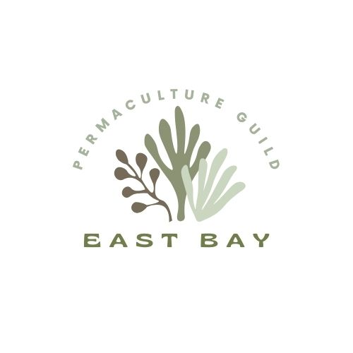
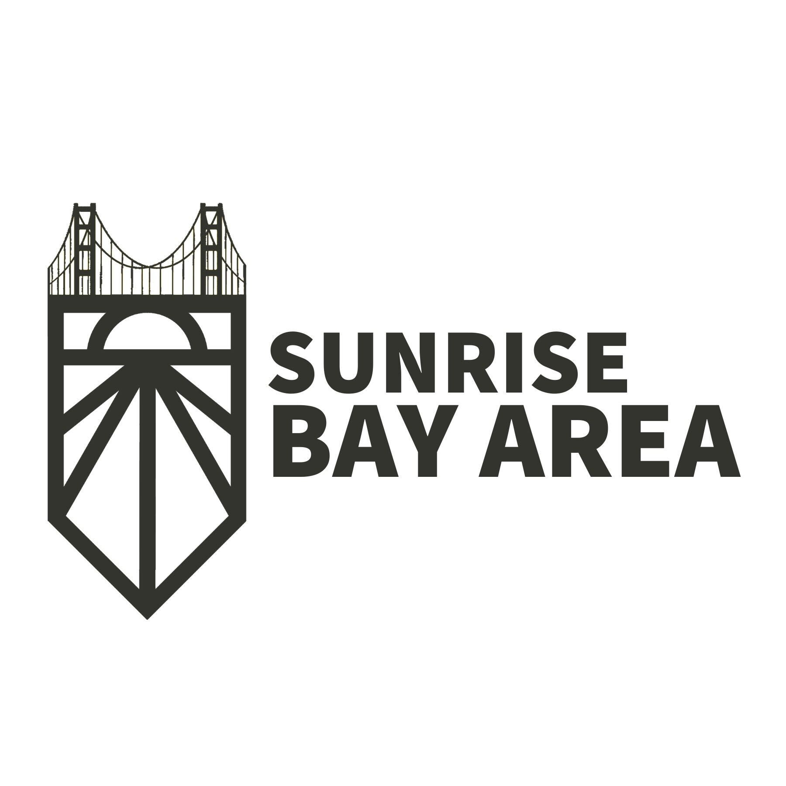

Join us for a play date to imagine a flourishing future for the Bay Delta Bioregion
Spend your Saturday exploring ecological community building based on abundance, equity, sufficiency and belonging without othering. Facilitated by Kaliya Young's team, the agenda is co-created live — everyone can host or attend sessions.
We're calling doers and dreamers from all walks of life to imagine regenerative pathways forward. Let's compost modernity and grow a future that is life-affirming, planet-positive, and serves at least seven generations ahead.
How do we better collaborate within and across communities in our bioregion and beyond, to co-create a thriving future for all life?
Presented in partnership by East Bay Permaculture Guild, Global Regeneration CoLab, Kaliya Young's team, Bay Delta Trust, and many others.
Sponsorships welcome — help us weave our mycelial network of nature-based futurists.
A participant-driven gathering using Open Space Technology. Attendees co-create the agenda and are free to host, move between, and contribute to sessions.
Date: Saturday, May 3, 2025
Time: 9:00 AM – 5:30 PM PDT
Location: Laney College Student Center, Oakland, CA
Tickets: $50–$200 (includes lunch)
No one turned away for lack of funds.
The Bay Delta Estuary spans 1,600 square miles where freshwater meets ocean tides. It's ecologically rich — and home to five major fossil fuel refineries. Let's grow our Big Regeneration team here, where "big oil" meets "big regeneration."
A natural area defined by ecological systems, not political borders.
A social movement to live sustainably and respectfully within our ecological home. Based on work by Gary Snyder, Peter Berg, and others.
Connect with changemakers, explore solutions, and co-create a regenerative Bay Delta future.
Join us for this participatory event where YOU shape the agenda and help reimagine a world that works for all life.
Saturday, May 3rd at Laney College, Oakland
Tickets: Register here